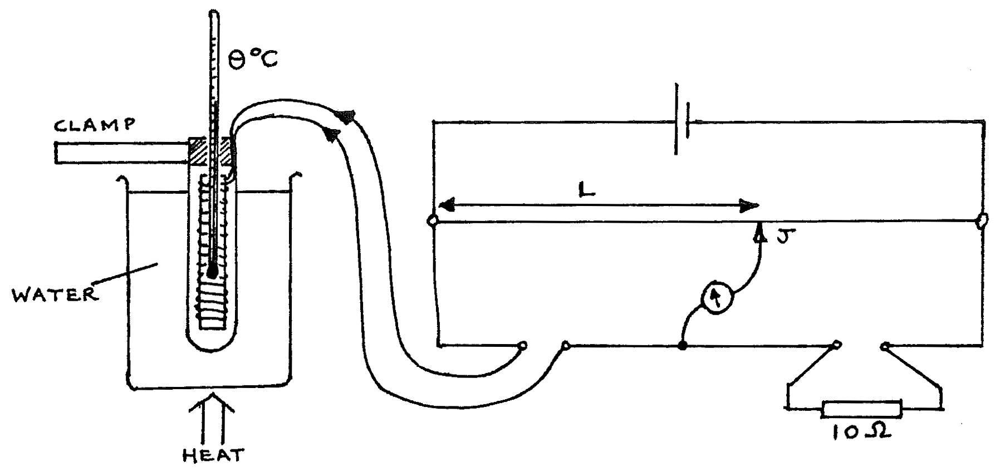
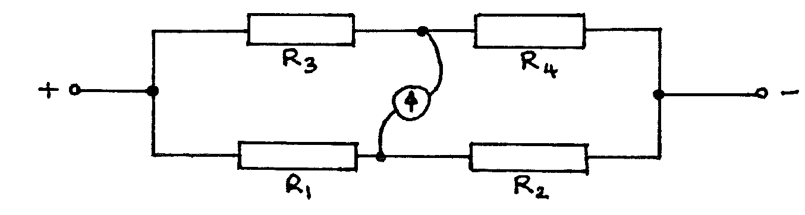

F2-3: The Temperature Coefficient of Resistance of Copper¶
Apparatus¶
Metre bridge board; clamp and stand; 1.5V cell; galvanometer; jockey; standard resistor 10\(\Omega\); copper wire & thermometer in a test tube; 1L beaker of water; bunsen burner (or other heat source); 8 connecting leads (5 long, 3 short); 1 sheet of graph paper.

Procedure¶
- Set up the apparatus as above, connecting the battery last. Check carefully that all connections are secure. Do not begin heating yet. Find the balance point length \(L\) where the galvanometer reads zero. Disconnect the battery. Read the temperature \(\theta\).
- Begin heating the water. At temperatures approximately 30, 35, 40, 45,... up to 90°C, reconnect the battery, find \(L\), and read \(\theta\) (to the nearest 0.1°C). Disconnect the battery between readings.
- Tabulate the readings of \(L\) and \(\theta\).
Theory¶
Resistivity (the Greek \(\rho\) ) at a given temperature is:
\[\rho = \text{Resistance} \left( \frac{ \text{Area}}{ \text{length}} \right)\]Therefore the resistance of a given sample varies with temperature. This is given by:
\[\begin{split}R_{\theta} &= R_0 (1+ \alpha \theta + \beta \theta^2) \\ \\ \text{Where: } R_{\theta} &= R \text{ at } \theta \text{°C} \\ R_0 &= R \text{ at } 0 \text{°C} \\ \alpha \text{ } & \text{and } \beta \text{ are constants}\end{split}\]\(\beta\) is very small, and is usually neglected. In this experiment, assume that \(\beta =0\).
The circuit is a Wheatstone Bridge:

When the galvanometer reads zero:
\[\frac{R_1}{R_2} = \frac{R_3}{R_4} \qquad \qquad \textbf{---- equation 1}\]And therefore in this experiment when the units of L are cm:
\[R_{\theta} = 10 \left( \frac{L}{100-L} \right) \qquad \qquad \textbf{---- equation 2}\]
Analysis¶
- For each value of \(L\), calculate a value of \(R_\theta\) using the above formula (equation 2).
- Plot a graph of \(R_\theta\) vs. \(\theta\)°C. Find the gradient and the y-intercept. NB: it is not necessary for the \(R_\theta\) axis to extend down to zero).
- Use the formula given in 1 of the theory, together with the gradient and y-intercept only, to calculate \(\alpha\), the temperature coefficient of resistance of copper.
Questions¶
- Use equation 1 above to prove equation 2.
- Calculate the expected resistance of the copper wire when its temperature is 300°C.
- If copper has a resistivity of
\(1.7 \times 10^{-8}\Omega\text{m}\) at 293K, find the
resistance of a sample of copper length 5cm, uniform
cross-sectional area \(10^{-6} \text{m}^2\), at:
- 0°C
- 100°C.